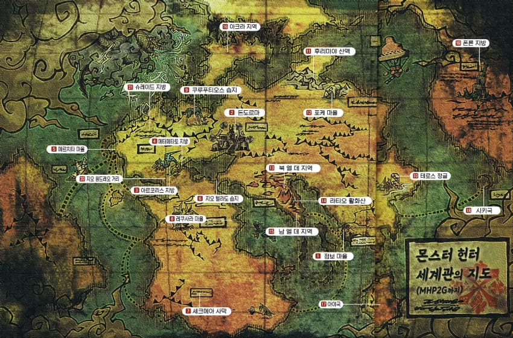
1-점보마을
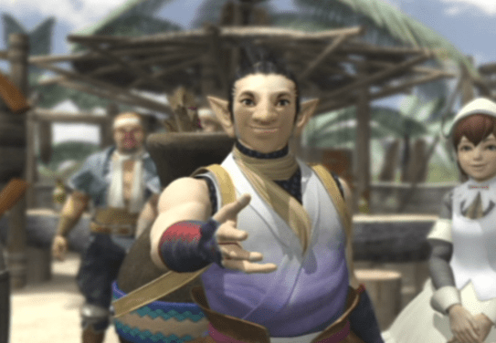
몬스터 헌터 도스의 배경이 되는 마을
젊은 용인 청년이 촌장이며
마을을 새로 개척하는 중이다.
헌터는 이곳에서 성장하게 된다.
2-돈도르마
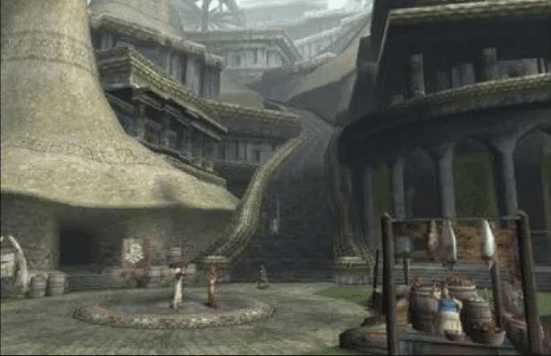
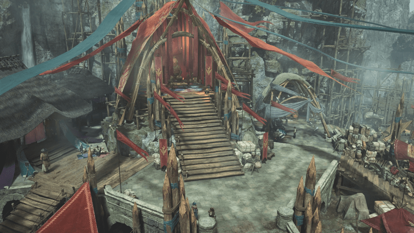
슈레이드 지역 옆에 있는
대륙의 정 가운데에 위치하고 있는 도스 온라인 지역
첨단 기술의 도입이 빠르고 대장 기술이 발전된 대도시며
고룡관측소의 본부도 이 곳에 있다.
발리스타와 대포, 격룡창이 무장되어 있는데
종종 고룡종들이 습격해 오기에 그때마다 요새방위전이 일어난다.
곧 출시될 어센던스의 요새 마도이가
이 곳을 많이 벤치마킹 한 것으로 보인다.
3-아르코리스 지방
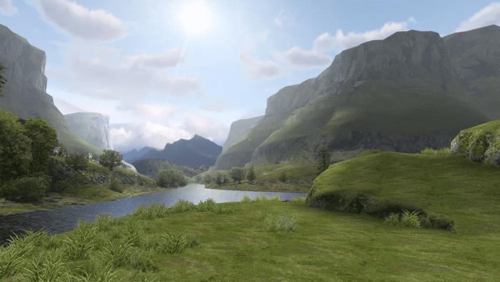
슈레이드 서쪽과 코코트 마을 남쪽 사이의 지역
온화한 기후와 광활한 초원, 그리고 수많은 구릉으로 유명하다.
이러한 특징 때문에 헌터 길드에서는 관습적으로 숲과 언덕이라고 부른다.
전반적인 채집요소가 풍부하다.
4-메타페타토 지방
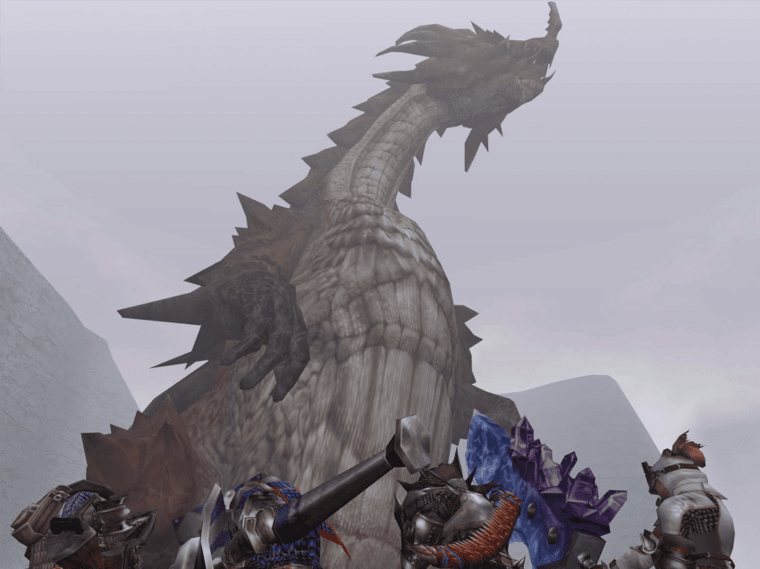
아르코리스 지방 근처에 위치한 헌터들이 직접 세운 마을.
각지로 사냥을 떠나는 헌터들의 중간 지점이며, 이곳을 아예 거점으로 삼는 헌터들도 많다.
이 마을이 생긴 이유는 노산룡이 이 지역 한가운데를 다닌다고 전해지기 때문이다.
마을 바로 옆에는 바다가 있고 이 해로를 이용해 자재들을 교역하는 듯 하다.
5-메르치타 마을
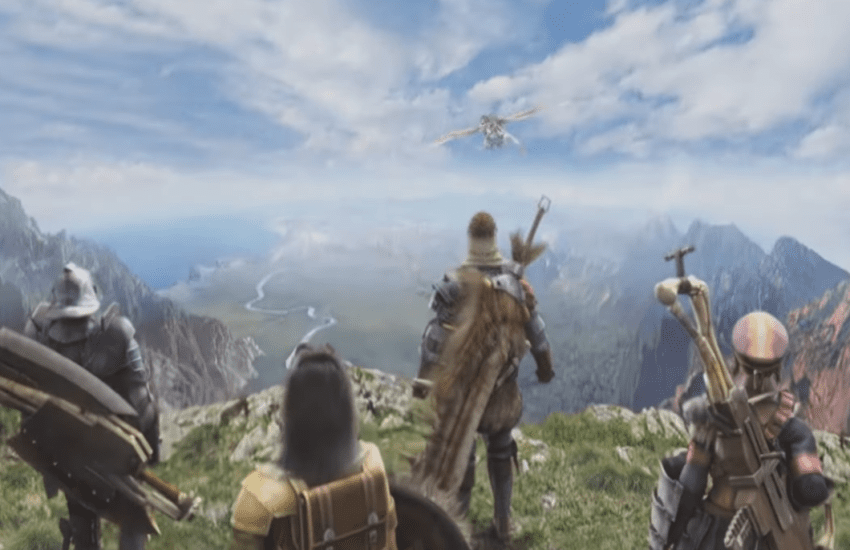
대륙 서쪽 끝에 위치한 비교적 새로생긴 마을.
대원호라 불리는 거대한 호수에 둘러싸여 있다.
원래는 미나가르데에서 온 헌터들과 대원호를 연구하는 사람들만 이용하는
작은 마을이었지만 해마다 통행량이 늘어나 현재는 마을이 되었다.
대원호는 옛날 운석 충돌로 생긴 크레이터가 오랜 시간이 지나
호수가 된 것이라고 한다.
6-지오 텔라도 습지
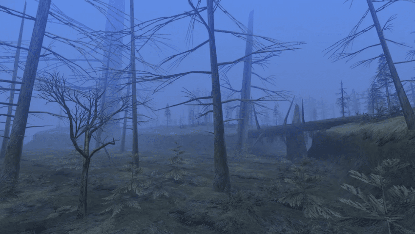
구 늪지라고도 불리는 돈도르마와 가까운 사냥터
강우량이 많아 지면이 단단하지 않기 때문에 구멍 함정은 설치할 수 없다.
척박한 환경이지만 이곳에서 발견한 희귀 광물이 바살모스나 그라비모스 유인용으로 쓰여
찾아오는 헌터들이 늘어나고 있다고 한다.
7-세크메아 사막
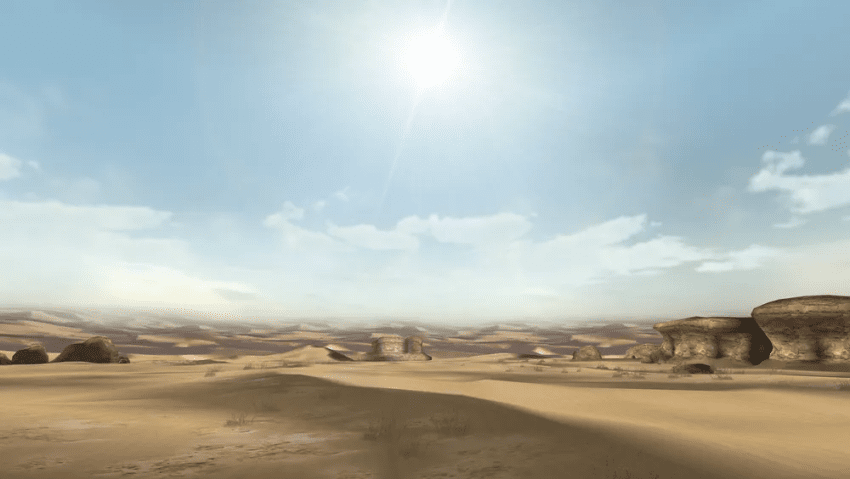
신 사막이라고 불리는 넓은 사막지대
낮과 밤의 극심한 온도차로 악명높은 곳이다.
낮에는 대부분의 맵에서 더위에 의해 헌터의 체력이 조금씩 감소하며
반대로 저녁에는 추위에 의해 스테미너가 빨리 감소한다.
가레오스같은 어류형 몬스터가 돌아다니고 있다.
8-레쿠사라 마을
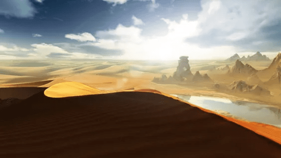
사막 오아시스에 세워진 마을로
이 마을은 데데 사막과 가까워 헌터들이 경유지로 이용하기도 한다.
모래폭풍이 자주 발생한다.
9-쿠루푸티오스 습지
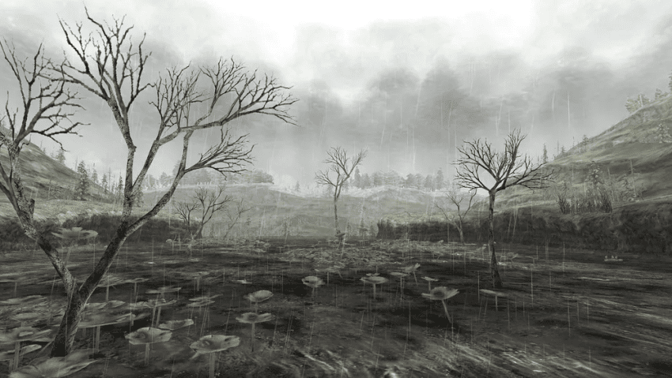
신 늪지라고 불리는 지역으로
구 늪지에서 그렇게 멀지 않은곳에 위치하고 있다.
낮동안엔 끊임없이 비가 내리고, 밤에는 독성 물질이 나오는 곳이다.
이곳에는 다양한 수생식물과 균류가 서식한다.
10-테로스 정글
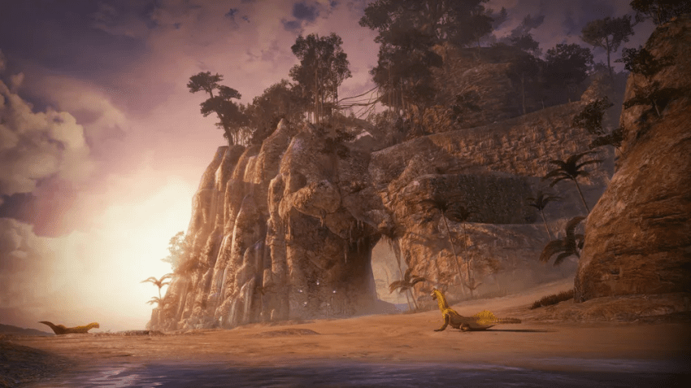
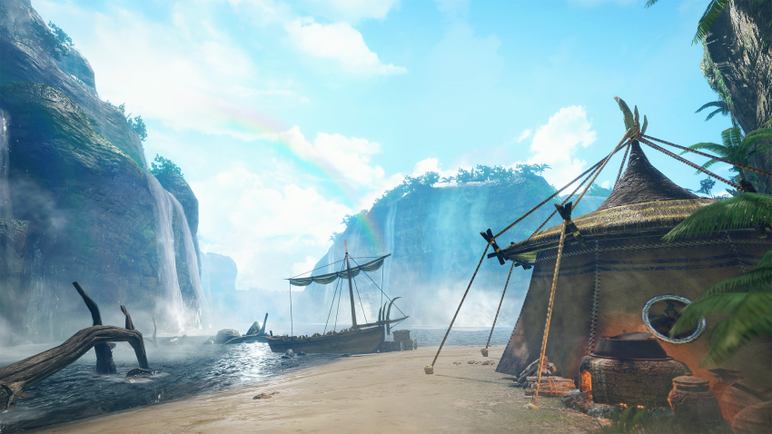
신 밀림이라 불리는 지역으로
해변이 가까이 있으며, 온갖 수풀과 나무 등으로 가득한 지역
벌꿀 및 버섯 채취의 산지로 꼽히는 곳이다.
온난기후로 매우 습해 갑각종 몬스터들이 많다.
썬브레이크에서 한 번 리메이크되어 나왔었다.
11-후라히야 산맥
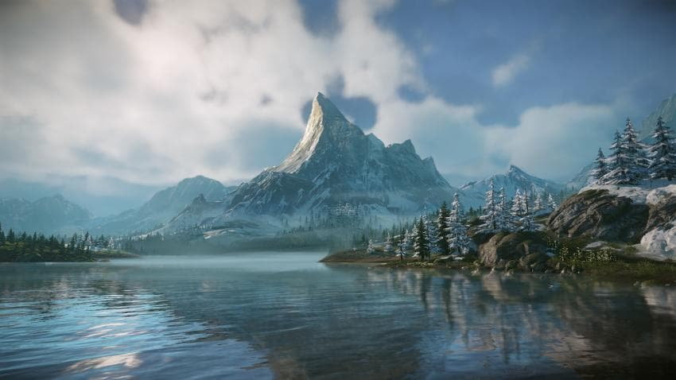
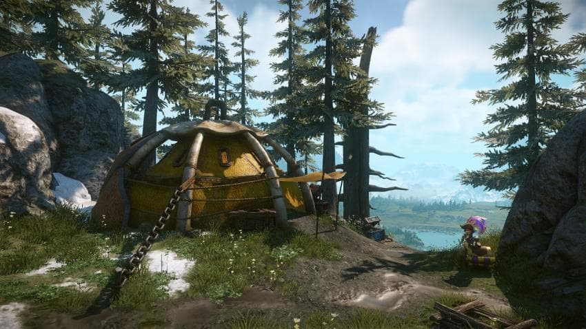
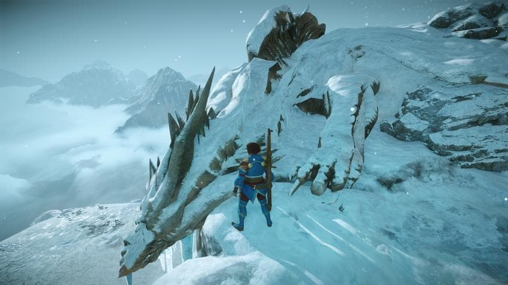
설산으로 잘 알려진 북쪽으로 뻗어 있는 산맥이다.
맑은 날에도 매우 추운곳으로, 일년 내내 눈이 녹지 않고 끊임없이 눈보라가 친다.
설산 정상에는 크샬다오라의 껍데기가 존재하는데, 이것은 녹슨 크샬다오라가 허물을 벗은것이다.
폿케 마을은 이 산맥 근처 고지대에 있다.
12-폿케 마을
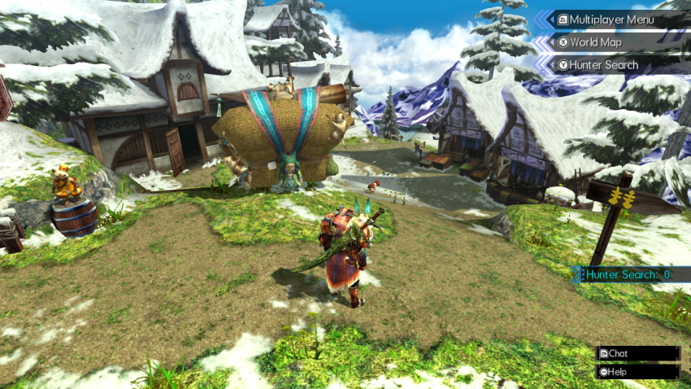
후라히야 산맥 근처의 고지대에 있는 마을. 설산으로 가는 헌터들의 주요 거점이다.
일년 내내 눈이 오는 바람에 사람이 살기에 매우 가혹한 환경이다.
대륙의 극한지에 위치하기 때문에 물류와 사람 손도 부족하다.
이렇게 가혹한 환경인데도 포터블 세컨드에선 첫 무대가 되는 곳이다.
13-북 엘 데 지역
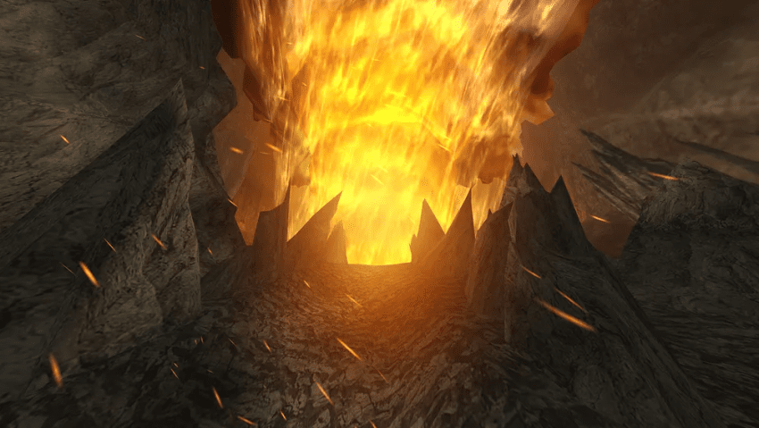
구 화산 지역으로
태고의 덩어리나 옥염석같은 희귀 광물이 풍부하기로 유명해 광부들에게 인기 있는 지역이다.
희귀 광물로 유명한 만큼, 이 화산 지대는 위험한 몬스터들이 많이 서식하는 곳이기도 해서
매우 위험한 곳이다.
14-라티오 활화산
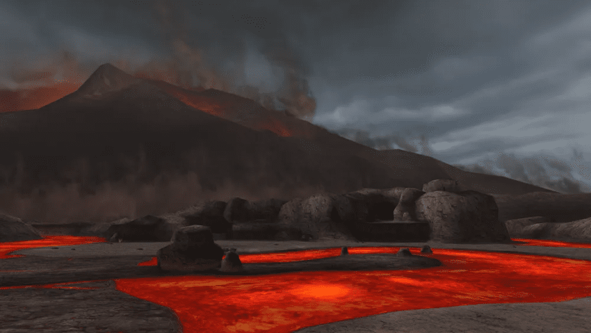
신 화산 지역
구 화산 지역인 북 엘 데 지방과 매우 가까이 있으며
2개 아울러 하나의 거대한 화산지대라고 부르는 편이다
이 영향인지, 이 두 화산은 공통된 환경이 매우 많다.
15-남 엘 데 지역
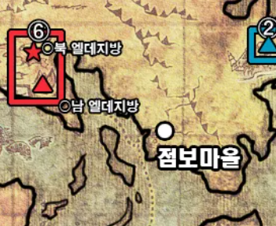
북부를 제외한 삼면이 바다인 어촌 마을
북 엘 데 지역의 험준한 화산 활동 때문에 이 마을은 인근 섬들과
점보 마을과 교역한다고 한다.
16-아쿠라 지역
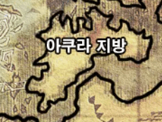
북해에 존재하는 한랭 지대
후라히야 산맥 훨씬 위쪽에 위치하고 있으며
제대로 된 설정도, 이미지도 없어서 몬헌 시리즈에 나온 필드중에
이 아크라 지역과 관련된 곳이 있는지 불명이다.
토지 전체가 빙설로 덮여있어, 날씨가 안정되지 않는
세계적으로도 유례없는 가혹한 지역이라고 한다.
17-아야국
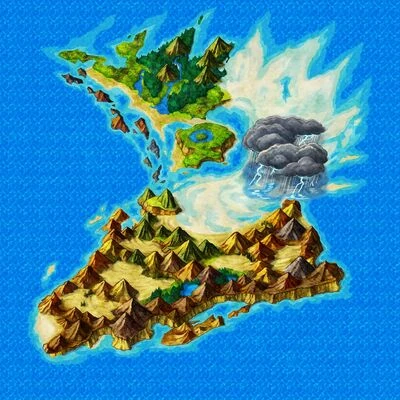
게임에 등장하지 않는 설정상의 지역
대륙 남동쪽에 있으며 지도에서 이름만 보이는 곳이다.
독특한 문화를 가진 부족들이 존재한다는데
문제는 이 지역의 부족들은 다른 민족이나 문명과의 교류를 거절하고 있기 때문에
자세한 정보를 알지 못한다.
배도 다니지 않아, 헌터들은 이곳에 의뢰를 받은 적이 없다고 한다.
많은 수수께끼가 존재하는 땅이다.
18-시키국
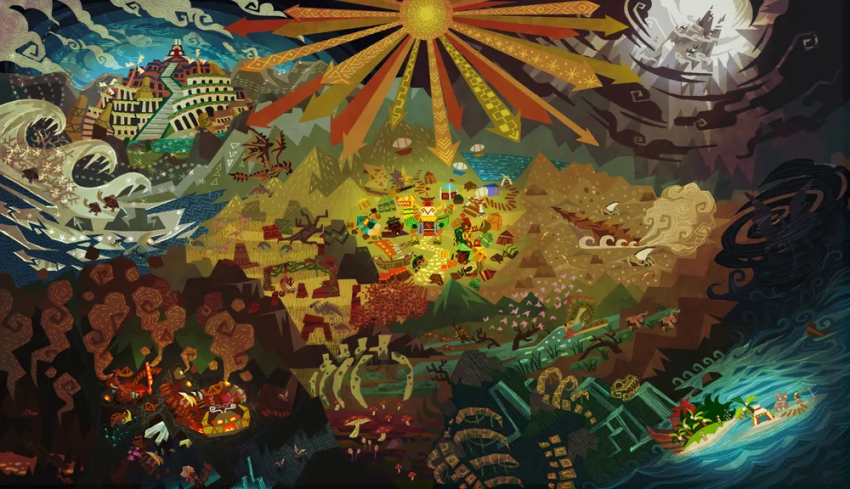
몬헌4의 주요 무대 중 하나로
시나토 마을과 천공산 천검산이 이 곳에 있으며
극동에 존재하는 섬나라로 용인족이 이곳에서 왔다는 설이 있다.
트라이 이후부턴
필드나 마을들이 지도상에서 구체적인 위치를 밝혀주지 않기 때문에
확실히 알수있는건 그것 뿐이다.
19-폰론 지역
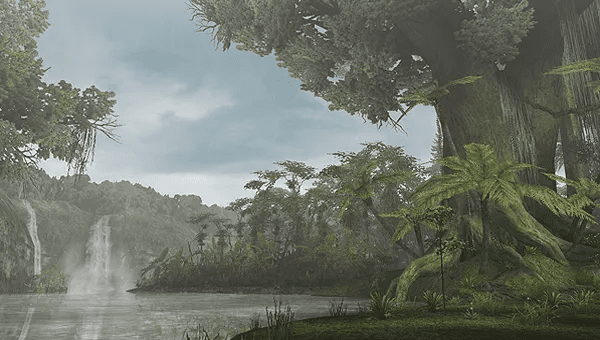
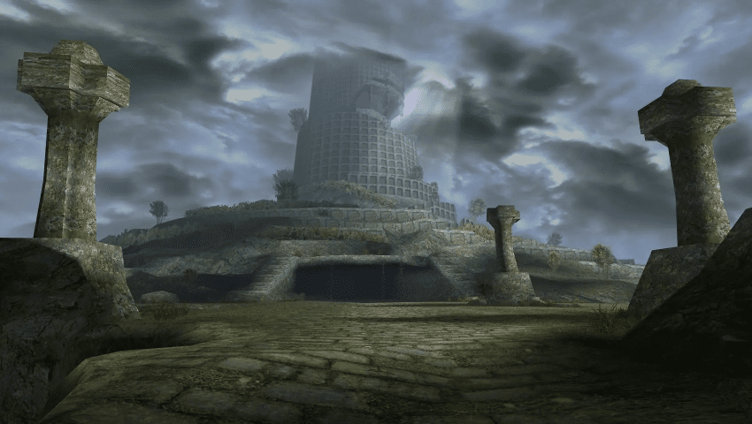
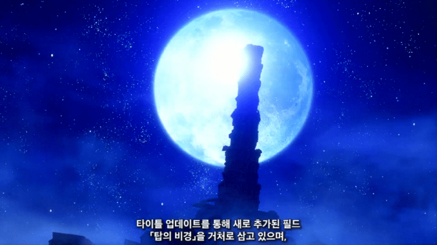
시키국 북쪽지방에 있는 거대한 대륙
대표적으로 수해와 탑이 있다.
헌터가 본격적으로 이곳에 파견된건 꽤나 초기때지만
아직도 자세한 정보는 나오지 않고, 길드도 적극적으로 정보 수집을 하는 곳이다.
고룡관측소에서도 꾸준히 보고되고 있는 야마츠카미가 이 땅에서 발견된다고 한다.
탑의 경우 탑, 탑의 비경, 탑의 정상으로 맵이 나뉘며
탑의 비경은 썬브레이크에서 한 번 리메이크 되어 나온 적이 있다.
20-지오 원드레오
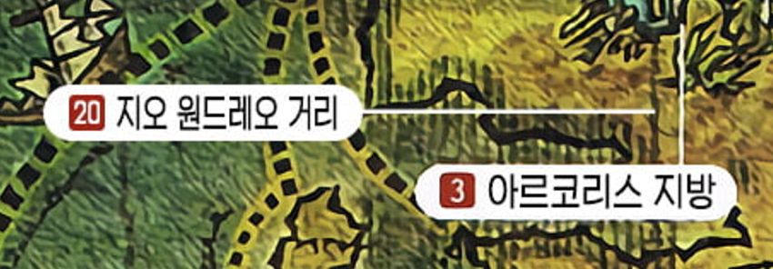
돈도르마 남쪽에 위치해 있는
해협에 인접해 있는 번화가 거리.
실제로는 아직 도시라고 부르기에는 미흡한 부분도 있지만,
현 대륙의 동서 교역을 지지하는 거점이다.
그래서 동쪽 서쪽 지방의 물건 양쪽 모두 취급하고 있다고 한다.
쌍검의 기술을 슈레이드 지방에 도입한곳이 이곳이라고 한다.
즉 쌍검의 발상지인것
21-슈레이드 지방
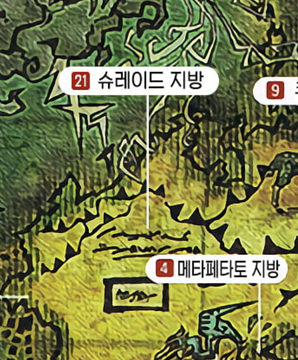
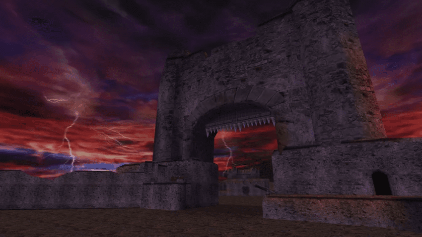
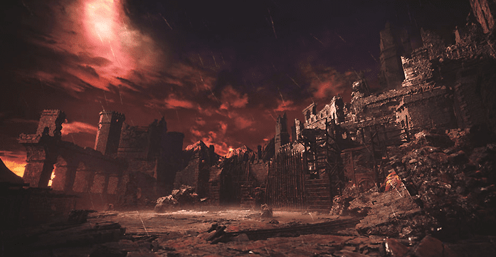
과거 먼 옛날 대국으로써 번영했으나
흑룡의 강력한 브레스 하루 버티고 멸망
그 이후 동, 서 슈레이드는 서로 교류를 끊게 되었고
현재는 서부를 통치하는 서 슈레이드 왕국과
동부를 지배하는 동 슈레이드 왕국(공화국)으로 나뉘게 되었다.
현재 헌터들의 거점은 서 슈레이드 왕국에 있으며
아이스본 흑룡이 나오는 슈레이드 성은
이 동/서 슈레이드 경계선 중심에 있다.
또한, 기후면에서도 차이가 있어
서 슈레이드 지방은 온화한 기후이지만
동 슈레이드 지방은 한랭기가 길다.
22-유쿠모 마을과 카무라 마을
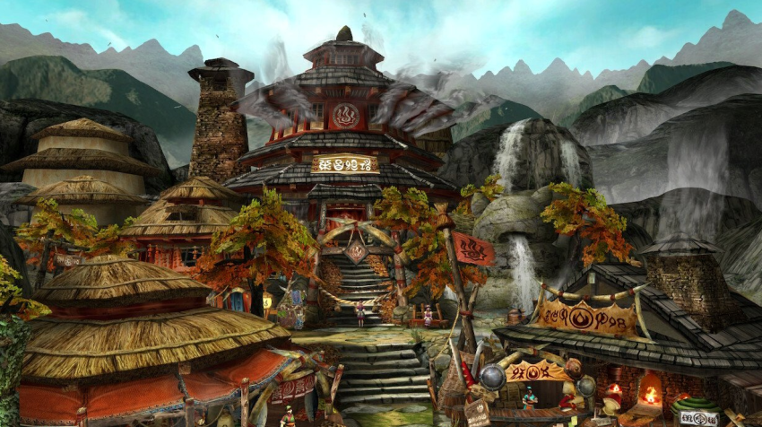
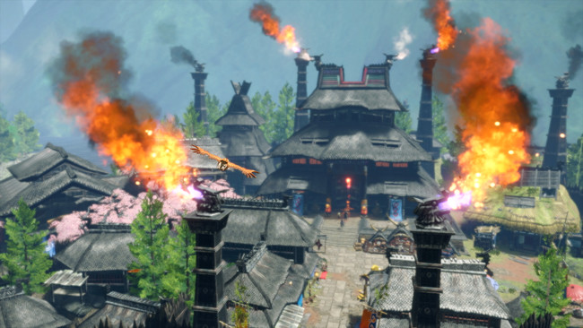
정확한 위치는 공식적으로 나오진 않지만
서로 가까운 곳에 있다는것만 알려진 유쿠모 마을과 카무라 마을
동쪽의 산악지대에 있는 유쿠모 마을은 온천으로 유명하다.
용인족 여성이 촌장을 맡고 있으며, 교통편은 그렇게 좋지 않다.
관광객은 아름다운 노천탕에서 술을 마시고
대나무와 송이버섯 등 인근 식재료를 살린 요리 등을 먹는 것 같다.
그 유쿠모 마을 인근의 카무라 마을은
마을 인구 모두가 헌터이며 50년에 한번씩 백룡야행을 치르고 있으며
식전 운동으로 라이젝스를 잡고, 개 2마리로 고룡을 잡는 정신나간 마을이다.
23-신대륙
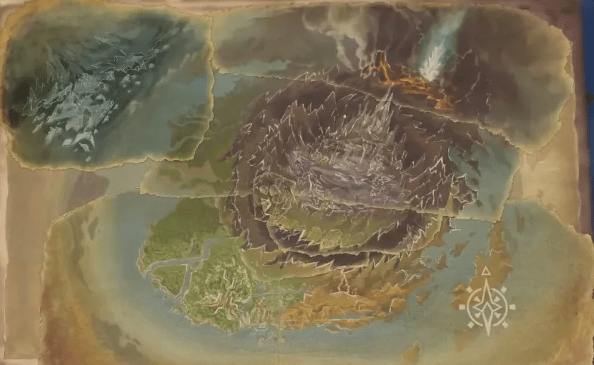
몬헌 월드 아이스본의 무대
본대륙과 별개의 완전히 다른 미개발 대륙으로써
존재 그 자체는 예전부터 전해지고 있었지만
기상, 항로, 공로 모두 불안정해 개척하기가 매우 힘든 지역이다.
10년에 한 번 일어나는 고룡들의 대륙 이동 현상 때문에
약 40년간 세월에 걸쳐 생태 조사가 진행되었지만 전혀 진전이 없었고,
5기단으로 들어온 주인공 푸른별에 의해 겨우 진전을 보였다.
24-금지된 땅
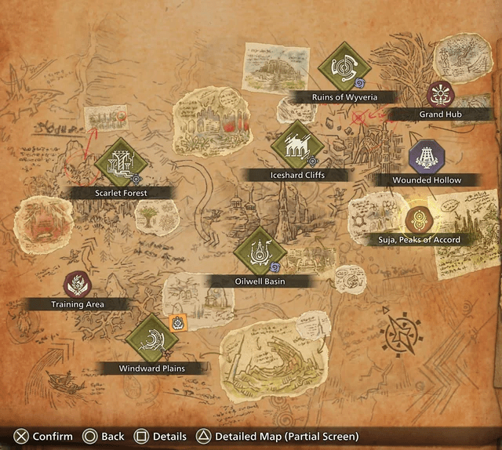
몬헌 와일즈의 무대
본대륙 기준 아주 먼 동쪽에 위치한 지역.
금지된 땅 이름대로 1000년에 걸쳐 인간의 출입이 금지되어 왔다는 역사를 가지고 있다.
한 때 고대문명을 이룬 대국이 존재했지만 욕심 부리다 멸망해버렸으며
그 여파는 주인공이 소속된 새 부대가 땜빵치고 있다.
댓글
수집 당시 댓글 64개
사고실험 · 11.15 08:08:22
· ㅇㅇ · 11.15 08:11:36
· ㅇㅇ · 11.16 02:44:00
ㅇㅇ · 11.15 09:11:58
바다노하라 · 11.15 09:13:03
ㅇㅇ · 11.15 09:15:44
· 안될거뭐있노. · 11.16 02:00:20
· ㅇㅇ · 11.16 02:43:50
· 쌀이좋아 · 11.16 05:46:37
· ㅇㅇ · 11.16 10:31:30
· 이지러너 · 11.16 12:09:06
내꼮뛰 · 11.15 09:21:51
모리바1 · 11.15 09:32:01
ㅇㅇ · 11.15 09:40:09
ㅇㅇ · 11.15 09:41:18
모리바2 · 11.15 10:00:02
모리바3 · 11.15 10:37:30
적도곰 · 11.15 14:13:39
ㅣ김토끼ㅣ · 11.15 16:01:45
백경 · 11.15 18:40:17
かなたん · 11.16 01:47:50
· ㅇㅇ · 11.16 02:26:24
ㅇㅇ · 11.16 01:50:32
ㅇㅇ · 11.16 01:56:22
· ㅇㅇ · 11.16 02:01:48
· 안될거뭐있노. · 11.16 02:02:43
· ㅇㅇ · 11.16 02:50:13
· ㅇㅇ · 11.16 09:33:45
· ㅇㅇ · 11.16 09:36:26
· 이지러너 · 11.16 12:10:14
ㅇㅇ · 11.16 02:00:39
봇치쟝 · 11.16 02:05:01
· ㅇㅇ · 11.16 02:06:46
스고이..
· ㅇㅇ · 11.16 06:57:36
· 봇치쟝 · 11.16 07:29:48
· ㅇㅇ · 11.16 08:44:06
· 봇치쟝 · 11.16 09:04:48
ㅇㅇ · 11.16 02:05:57
· ㅇㅇ · 11.16 05:12:50
ㅇㅇ · 11.16 02:26:17
ㅇㅇ · 11.16 02:54:20
별_랑 · 11.16 02:55:16
이왜실
ㅇㅇ · 11.16 03:06:35
· ㅇㅇ · 11.16 10:00:24
가디안 · 11.16 03:07:15
ㅇㅇ · 11.16 03:09:05
· ㅇㅇ · 11.16 05:29:06
· 원갈이 · 11.16 06:22:33
· 이지러너 · 11.16 12:12:02
ㅇㅇ · 11.16 03:32:39
ㅇㅇ · 11.16 03:34:37
· ㅇㅇ · 11.16 03:39:37
ㅇㅇ · 11.16 04:31:02
ㅇㅇ · 11.16 05:30:41
ㅇㅇ · 11.16 07:08:20
이상혜지꽃 · 11.16 07:40:13
ㅇㅇ · 11.16 09:04:05
ㅇㅇ · 11.16 10:00:06
ㅇㅇ · 11.16 10:09:38
ㅇㅇ · 11.16 11:16:16
ㅇㅇ · 11.16 11:26:32
이지러너 · 11.16 12:15:40
ㅇㅇ · 11.16 13:30:20
ㅇㅇ · 11.16 15:25:23